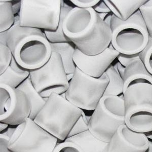

Filterkamer
Nog meer dan bij de eerste vijver met enkel goudvissen zal de filter een belangrijke rol spelen. Zodanig zelf dat het uiteindelijk om een ganse filterkamer zal gaan met een oppervlakte van net geen 6 m2.
Als mechanische filter is gekozen voor een state-of-the-art trommelfilter. De Easy Drum van Filtreau/AEM is zeer betaalbaar en zou een even effectieve trommelfilter zoals zijn grotere broertjes zijn, en heeft standaard een ingebouwde 40 watt UV-C amalgaam lamp.
De twee toevoeren van 110 mm zijn ideaal voor enerzijds de beluchte bodemdrain van 110 mm en anderzijds heeft de compacte wallskimmer van Oase een aansluiting van 110 mm.
Het gefilterde water gaat vervolgens via de ene afvoer naar het bewegend bed gedeelte. Na een dagje 'knutselen' was het bewegend bed gedeelte van de filter klaar. De polyester vijverbak heeft een inhoud van 600 l, m.a.w. 100 l filtermedium zal geen enkel probleem zijn welke op termijn nagenoeg verdubbeld kan worden.
(25 januari 2020)
Voor de beluchting is er gebruik gemaakt van een ring beluchter. De combinatie van een tankdoorvoer, een rasterbuis en een flexibele eindkap maken dat de toe- en afvoer er zelfs 'professioneel' uitzien.
(25 januari 2020)
Doordat de maaswijdte van de rasterbuis 10 x 12 mm is, kan er nu geen gebruik gemaakt worden van Kaldness K1 als filtermedium. Alhoewel dit filtermedium de referentie blijkt te zijn, zijn er nieuwere filtermaterialen op de markt gekomen zelfs met een hogere specifieke oppervlakte voor bacteriën. Een ervan is gekend als Hel-X met een diameter van 13 mm.
Na het bewegend bed wordt het water opgesplitst in drie takken: een statisch bed filter, een plantenfilter en een trickle toren.
Een kleinere polyester vijverbak zal gevuld worden met Siporax als statisch bed filter. Na enkele maanden is Siporax in staat om nitraten af te breken tot stikstofgas doordat er zich denitrificerende (anaerobe) bacteriën (anaeroob = zonder lucht kunnen leven) in het binnenste van de wand huisvesten.

Een derde polyester vijverbak zal geïntegreerd worden aan de achterste zijde van de achthoekige koivijver en een plantenfilter vormen. Deze vijverbak is voldoende groot en net voldoende diep (59 cm) om zelfs beplant te worden met een waterlelie (Nymphaea Snow Princess uit de terras vijver). Drijvende planten, zuurstofplanten en andere planten zullen dan ook niet als groenvoer voor de koi kunnen dienen.
Deze eerste twee waterstromen stromen in de vijver via twee wanddoorvoeren onder 45° opdat een draaiende waterstroming ontstaat boven de bodem.
De trickle toren is geïnspireerd op de bakki shower van Momotaro en zal ideaal gezien op maat gemaakt worden in RVS met slechts 3 bakken. De uitstroom is tevens een waterval van 85 cm breed. De keuze van het filtermateriaal ligt op dit moment nog niet vast.
Door de opsplitsing in drie takken worden er ook drie pompen geïnstalleerd. De keuze is gevallen op de regelbare AquaForte DM reeks.
Uiteindelijk zal de filterkamer afgewerkt worden met uit gerecycleerd kunststof vervaardigde tand-en-groefplanken van Govaplast
en als dakbedekking voor profielplaten in verzinkt metaal.

Net zoals bij de eerste vijver zal er nu ook op een Arduino UNO gebaseerd monitoring systeem geïnstalleerd worden dat naast de temperaturen ook het water niveau zal opvolgen.

Ondertussen is gebleken dat een Arduino Uno zijn beperkingen heeft om alle functionaliteiten te kunnen implementeren en was de overstap naar een Arduino Mega noodzakelijk.